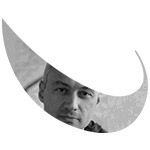
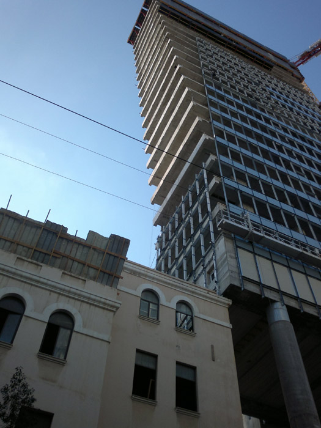
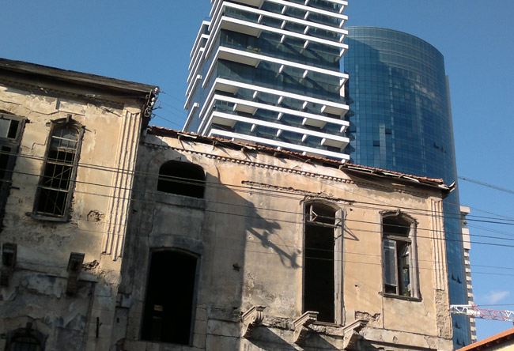
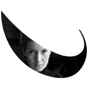
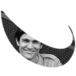
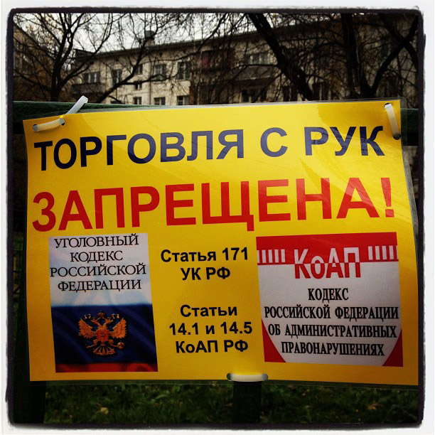
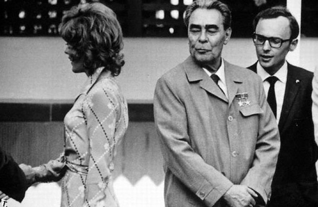
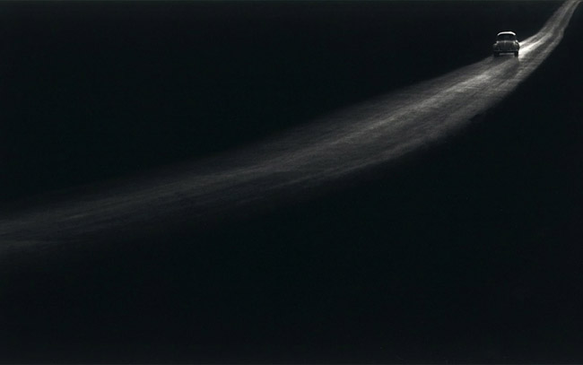

Где наша роза, друзья мои?
 Редакция посещает музыкальные салоны, сомнительные гостиницы, наблюдает онлайн за сменой пола и начинает готовиться к трудной — политически, климатически и шизофренически — зиме
Редакция посещает музыкальные салоны, сомнительные гостиницы, наблюдает онлайн за сменой пола и начинает готовиться к трудной — политически, климатически и шизофренически — зиме

Василий КОРЕЦКИЙ
Подруга рассказывает: ехала монорельсом из Останкино, в вагоне находилась женщина на грани нервного срыва, лет сорока пяти. Бубнила под нос, выбрала пальцами весь крем из пирожного-корзинки, выбросила саму тарталетку, облизала пальцы, обернулась и, выбрав наметанным взглядом жертву, подошла и спросила: «Отчего в России снимают такое плохое кино? Кстати, а где его снимают — все на «Мосфильме»? А независимые продюсеры у нас есть?» Кажется, мы действительно плохо знаем нашего читателя.
Ходили на разведку во вьетнамское общежитие, ели фо с тараканом и угря с лемонграссом, потом доехали до усадьбы Останкино (совпадения случайны), уже закрытой. Площадь перед усадьбой — какая-то феноменально густая выжимка из Москвы: сразу и усадьба, и demolition (ее же), земляные работы, пруд с уточками, ностальгические трамваи и березки, хрущевки и многоэтажные серые короба. Но при этом тут ничего не раздражает, не мельтешит — как будто это не город, а фильм о нем.
Вдруг заметил, что увлеченный оригами коп из «Блейдраннера» дико похож на критика — ресторатора Гаврилова. Фильм смотреть теперь невозможно, все время ждешь камео Ицковича и Шнурова.
Юлия ЛЮБИМОВА
Фандом, в котором (или с которым) я провела столько лет, делает толерантность привычной, что твоя кожа. Ну, по крайней мере, интернациональный книжно-сериальный фандом, то есть онлайн-сообщество фанатов всяких популярных книжек («Гарри Поттер», «Властелин колец», да хоть бы и «Гордость и предубеждение») и сериалов. Этот фандом, комьюнити по большей части женское, пишет собственный фикшн по мотивам оригинальных произведений, и по преимуществу оно — про любовь. Шире — про отношения вообще, ýже — про секс. Фандом исследует психофизиологию любви и секса, докапываясь до непредставимых тебе ранее глубин и вкладывая в фикшн свои мечты и желания с немыслимой откровенностью. Наверно, поначалу эти бесстрашие и откровенность порождаются двойной анонимностью: это фикшн, да еще и вывешенный абы где под условным именем. Но постепенно, вертясь в одних кругах, люди узнают друг друга, а откровенность остается — и всеми принимается. И постепенно, находясь среди такого количества артикулированных и визуализированных фантазий, ты, с одной стороны, привыкаешь не стесняться того, чтó в твоей голове, а с другой — как-то забываешь, что вещи, благодаря фандому являющиеся для тебя нормой и повседневностью, для многих твоих знакомых из «реальной жизни» — дичь и странность.
Скажем, я вот уже лет 10 общаюсь с молодым человеком, который не просто бывшая девушка, а поменялся полами с партнером. Когда я начинала его читать, он еще был девушкой и много писал про гендерные проблемы, мангу, японскую музыку — и свою семейно-хозяйственную жизнь. Так что этот exchange случился на моих глазах: я читала про то, как они пришли к этому решению, как копили деньги на операции, как обсуждали это с родителями (и одновременно — что они ели, какие распродажи были в соседнем супермаркете, какие интересные книжки они прочли в тот месяц), как меняли документы и имена. Мэри, допустим, стала Джоном, а Фил — Кристиной. Да не важно, кто какое имя взял, речь не об этом. А о том, что за десять с лишним лет в фандоме я прочла такое количество всего на темы пола и секса, что мое понятие нормы стало похоже на стоглавую гидру. Попробуй не размыть свои гендерные предрассудки или стереотипы, если ты все время идешь индуктивно, от множества частных «девиаций», особенностей, стилей жизни, мотивировок и детального объяснения всевозможных случаев «не такого, как». Вот и получается, что нет никаких общих «их»: геев, американцев, трансгендеров, домохозяек — никого. Есть множество частных историй, у каждого своя, и еще больше историй придуманных, написанных, рассказанных.
То есть долой обобщения, да здравствуют частности.
По этому поводу напоследок история, чтобы всех не задавить звериной серьезностью. Любимая онлайн-игрушка, съевшая все мое свободное время, продолжает поставлять казусы — на сей раз гендерный, лыко в строку, так сказать. Встречаюсь с членом своей гильдии, чтобы что-то передать. Она не может «меня» (моего персонажа) найти на людной площади. «Да вот же я, вот», — прыгаю я на месте — и получаю удивленное сообщение: «Юля, это ты? Ты что, мальчик?» Да нет, говорю, я-то девочка. А вот персонаж — мальчик. «Ну надо же, — удивляется она, играющая персонажем-девочкой. — Никогда такого не видела. Хотя парни иногда девушками играют…» Ну откуда же нам знать, мил человек, думаю я про себя. Вон тот перекачанный гладиатор — он и в жизни брутальный тип или, может, худосочный подросток? Он ведь с таким же успехом тоже может оказаться Юлей. Или Джессикой. Прелесть онлайн-анонимности. Ну и, во-вторых, — персонаж. У меня их вообще трое — два мальчика и девочка, совсем, кстати, не похожая на меня, рыжая и пухленькая. Что же теперь, и Льву Толстому надо было писать только про Андрея и Пьера — и никаких Наташ, а Астрид Линдгрен — только про Пеппи и фрекен Бок?
Глеб МОРЕВ

Неделя в Тель-Авиве. Неожиданно город заставляет вспомнить о старой Москве. Не в том смысле, что похож на нее внешне, — совсем не похож. А в том смысле, что со старым Тель-Авивом происходит то же, что и со старой Москвой, — как архитектурно-историческое целое он исчезает. Так же, как и в Москве, это неизбежный процесс — исторически сложившийся характер городской среды оказывается абсолютно не приспособлен к изменившимся социоэкономическим обстоятельствам. Выхода два: стать музеем или измениться.

Тель-Авив идет по второму пути. Основную массу прежней застройки составляют колониальный модерн, ар-деко и баухаус. Посреди двух-трехэтажных кварталов идет активное новое строительство — никак не пытающееся подлаживаться под традиционный городской пейзаж. Высотные здания разрушают привычные городские масштабы, остраняя старые кварталы, как бы заключая их в музейную раму. От провинциального уюта приморского города мало что остается, как мало что осталось от домашнего уюта барской усадебной Москвы. Другое дело, что здесь понимают всю иллюзорность попыток музеефикации города под предлогом сохранения застройки, не способной соответствовать функциям современного мегаполиса. Потому и небоскребы ножом входят в самую гущу старых кварталов, буквально камня на камне не оставляя от лицемерной — потому что неосуществимой — идеи «заповедных кварталов».

В Израиле легко находится и более общая архитектурная дихотомия, параллельная российской «Москва — Петербург» — «Тель-Авив — Иерусалим». Как неизбежно было в новой реальности ХХ века уничтожение старой Москвы, так вполне реально и необходимо сохранение как целого исторического Петербурга, с минимальными потерями дожившего, слава богу, до конца ХХ века. Как стремительно уходит в историю старый Тель-Авив, так вечен и тщательно оберегаем от разрушительно-резких новаций Иерусалим, чей образ, в общем, законсервирован и не претерпел кардинальных изменений со второй половины ушедшего столетия.
Несоответствия в этой зеркальной «полисной» конструкции, тоже, впрочем, вполне симметрические (белокаменная еврейская столица vs. исчезнувшая русская «белокаменная»; бывшие столичные приморские города — Петербург и Тель-Авив — развивающиеся разновекторно) делают ее, по-моему, лишь более забавной.
Екатерина БИРЮКОВА

Посетила невероятное событие в удивительном месте. Два шага от Лубянки. Милютинский переулок, первая высотка Москвы. В начале прошлого века она была телефонной башней. В ней восемь этажей, не знаю, что на этажах со второго по шестой. На первом — артистические, на восьмом — фуршет, на седьмом — как бы концертное пространство с роскошно-разъеденными стенами и обваливающейся лепниной. Лифт то и дело отказывается работать. Аристократическая разруха. Первое сильное впечатление — кажется, что это кадр из перестроечной юности. Потому что сейчас в золотом центре Москвы такого просто не может быть. Второе не менее сильное впечатление — страшно холодно. Публика сидит, блокадно закутавшись в верхнюю одежду. И скользящие иногда сквозь нее длинноногие эльфы из сказочного мира гламура в летучих открытых платьях только усиливают морозный эффект.
Один из таких эльфов — хозяйка салона. Она вышла открывать вечер и первым делом сообщила, что недавно посетила оперу Сергея Невского про Франциска в Большом театре и что это полный ужас — и музыка, и постановка. Поскольку я вообще-то пришла на некую презентацию оперы Владимира Мартынова Vita Nova, в которой помимо самого композитора должен был участвовать Владимир Юровский — первый западный исполнитель этой оперы и одновременно большой друган Сергея Невского — то мне сразу стало интересно.
Юровский запаздывал, начала не слышал, а, появившись, стал умно разговаривать с публикой, не забыв удовлетворенно сообщить между делом, что в Большом театре поставили «Франциска» и вроде очень удачно. Зал на этих словах ожил, хозяйка салона элегантно закричала «забудьте все, что я вам говорила в начале», Юровский ничего не понял и продолжил спор о латыни с каким-то въедливым слушателем из первого ряда (vita nova — это Петрарка). Главный смысл его выступления и вообще нахождения в этом странном помещении был в том, что он ищет подходящее пространство для московского исполнения монументальной оперы (скорее антиоперы, пост-оперы) Мартынова со сложной судьбой (была когда-то заказана Мариинским театром, но Гергиев по ходу дела потерял к ней интерес, за нее на западе взялся Юровский, в Лондоне ее разругали, в Нью-Йорке приняли более благосклонно). Юровский намекнул, что готов ждать подходящего пространства, все равно как Вагнер — своего Байройта.
Сам Мартынов, впрочем, до появления Юровского уже все с Невским разрулил и объяснил — красиво и безальтернативно, как он умеет. Будто теорему доказал. Да, композиторов и новых опер нынче стало много. Невский в Большом, Раева и Сысоев — в Театре Наций, Филановский — в Башне Федераций, Раннев — в Эрмитаже. И есть соблазн противопоставить их изломанную музыку его уверенным консонансам. Но не надо конфронтаций и столкновений, это бессмысленно. Просто те — родом из ХХ века. Где было принято страшно рассказывать про страшное. А он приглашает жить в XXI веке и пророков искать где-нибудь в X-XI. И вот он делает первый слабый шаг, но за ним придут другие. Мартынов про это много книжек написал, все идеи его давно известны, смысла нет пересказывать. Но все равно каждый раз его убежденность завораживает. А тут еще холод, лепнина, сводчатая сакральность и Юровский собственной персоной.
А площадка эта называется Галерея «Система». Мартынов тут главный герой. И исполняли в тот вечер другое его сочинение — «Упражнения и танцы Гвидо» (посвященные Гвидо Аретинскому, итальянскому теоретику музыки, тому самому пророку из X-XI веков) под управлением Татьяны Гринденко.
Марина ДАВЫДОВА
В Париже есть бульвар Рошешуар. Это самое подножие Монмартра и место компактного проживания эмигрантов. Я в нем недавно в очередной раз оказалась. Сняла номер в недорогой гостинице. Гомон пестрой толпы (тут людно даже поздними вечерами), общая неряшливость и странноватые запахи поначалу даже бодрят. Правда, недолго. На следующий день на станции метро «Шато Руж» я была единственным человеком, который по старомодной привычке купил билет. Прочие компактно проживающие граждане пробирались на станцию, варварски насилуя турникеты: просто поразительно, как они выдерживают этот натиск. Но это ладно, к этой картине парижской жизни я уже более или менее привыкла. Сцена в соседнем гастрономе оказалась куда колоритнее. Темнокожий молодой человек, проходя мимо меня, небрежно взял с полки бутылку с молоком, открыл ее, чуть взболтнул, отпил из горлышка, закрутил и поставил на место. После чего твердым шагом отправился к сырному отделу. Дело было около 10:00 — самое время завтрака. Я, несколько обалдев от такой наглости, кажется, в первые в жизни решила наябедничать. Но на выходе стоял охранник, рослый темнокожий парень, очень похожий на того, который зашел в гастроном закусить. И я предусмотрительно решила не лезть со своим уставом в чужой монастырь. Ну, может, тут так принято — в этом отдельно взятом районе Парижа — в метро бесплатно проходить, завтракать за счет гастронома. В конце концов, политкорректность — это умение понять других, не похожих на тебя людей, принять их обычаи, их систему ценностей. Они ведь мне ее не навязывают. Они ж не возражают, чтобы я покупала билеты в метро и платила за бутылку молока или сыр. Вот и мне надо быть толерантнее, спокойнее… Терпимее надо быть, черррт подеррри!
*
У меня перед домом в этом году четыре раза поменяли асфальт. Два раза переоборудовали детскую площадку. Не помню, сколько раз перекрасили всякие бордюры и перила. У меня перед домом была площадка. Летом на ней играли в футбол, а зимой ее заливали водой и катались на коньках. Площадку решили модернизировать. Ее обнесли красивыми бортиками, заасфальтировали и долго-долго настилали на асфальт мягкое зеленое покрытие, на которое не больно падать. Неделю, наверное, настилали. Красиво так получилось. Вчера я вернулась домой и увидела, что пять гастарбайтеров аккуратно отрывают от асфальта это зеленое покрытие. Видимо, пора модернизировать модернизацию.
Хорошо быть налогоплательщиком в России. Налоги осваиваются прямо у тебя перед глазами. Отчетность фактически ежедневная. Жильцы в восхищении.
Денис БОЯРИНОВ

Побывал на выставке номинантов «Премии Кандинского», для которой вновь открыли кинотеатр «Ударник». Из подслушанных разговоров:
«Не люблю я это современное искусство. Издалека вижу — стоит накрытый стол. Думал — фуршет. Подхожу — а там головы отрубленные на блюдах лежат» (Дмитрий Цветков. «Головы героев»).
«— А что значит это заедание картинки? Ну, вот люди двигаются как роботы. В чем замысел художников? — Да у них просто денег на качественное 3D не было. Не хватает фреймов» (АЕС+Ф. «Священная аллегория»).
Кстати. Вот это ощущение, что «не хватает фреймов», остается от большинства выставленных работ. Больше всего впечатлил «Ударник», в котором стали проступать черты музея современного искусства.
Станислав ЛЬВОВСКИЙ
Впечатлений о внешнем мире у меня немного, я там бываю нечасто, работы много — и вообще, что там делать, снег вот сегодня уже показали. Тридцатого числа вот пойду туда, во внешний мир.
За некоторой надобностью второй день читаю тексты по natural law: Гоббс, Бентам, Локк, Пейн. Невозможно поверить не в то, что параллельно происходит сюжет с Развозжаевым — это как раз везде бывает. А в то, что в контексте нынешней российской, с позволения сказать, общественной дискуссии даже Локк звучит так, что сотрудники центра «Э» как минимум должны провести с ним профилактическую беседу. А вот Пейна точно надо привлекать. Во-первых, оскорбление чувств верующих. «Мой собственный ум — моя церковь» — это что вообще такое? А во-вторых, призывы к насильственному изменению государственного строя, чистая уголовка: «О вы, любящие человечество! Вы, осмеливающиеся противостоять не только тирании, но и тирану, сделайте шаг вперед»!
Скоро у нас и Гуго Гроций под статьей ходить будет, — чего бы нет?

Уже после того, как этот фрагмент был написан, выяснилось, что на литературном фронте мы тоже немало подвинулись: вот уже, значит, и «Мертвые души» созданы «опасно заблуждавшимся автором». Не говоря уже о том, что и в словарях какое-то царит безобразие, сами посудите: «Существует явная попытка размыть понятие культуры в сознании общества. На сегодняшний день существует около 422 трактовок термина “культура”. Что же это такое»?
И действительно же. Безобразие, как подумаешь.

Л. Брежнев поглядывает на Джилл Сен-Джон, подругу Госсекретаря США Генри Киссинджера, во время приема, устроенного Ричардом Никсоном. Фото Wally McNamee, август 1973
Во времена, когда из каждого утюга вещает даже не Генеральный Секретарь ЦК КПСС Леонид Брежнев, а непонятно откуда взявшийся легион мелких косноязыких сумасшедших, труднее всего сохранять трезвость ума, не превращая это самое сохранение в психологический защитный механизм.
Пользуясь случаем, хотел бы пожелать успехов в означенном нелегком деле всем, кто в него вязался. А то зима скоро, а она у нас сами знаете какая.

Джордж Тайс. Загородное шоссе
Источник http://www.colta.ru/docs/8210